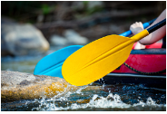
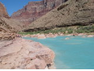

Welcome to White Water Rafting

Rafting Purpose
Whether you're a nature enthusiast, a thrill seeker, a fitness fanatic, or simply looking for some family fun, whitewater rafting has something for everyone. Experience the excitement of navigating rapids, immerse yourself in stunning natural scenery, and learn about the rich history of this exhilarating activity. Suitable for all ages and abilities.
Site Offers
This popular recreational activity involves navigating down rivers using inflatable rafts, typically under the guidance of experienced guides. White Water Rafting offer these thrilling and safe adventures to individuals and groups for a fee.
